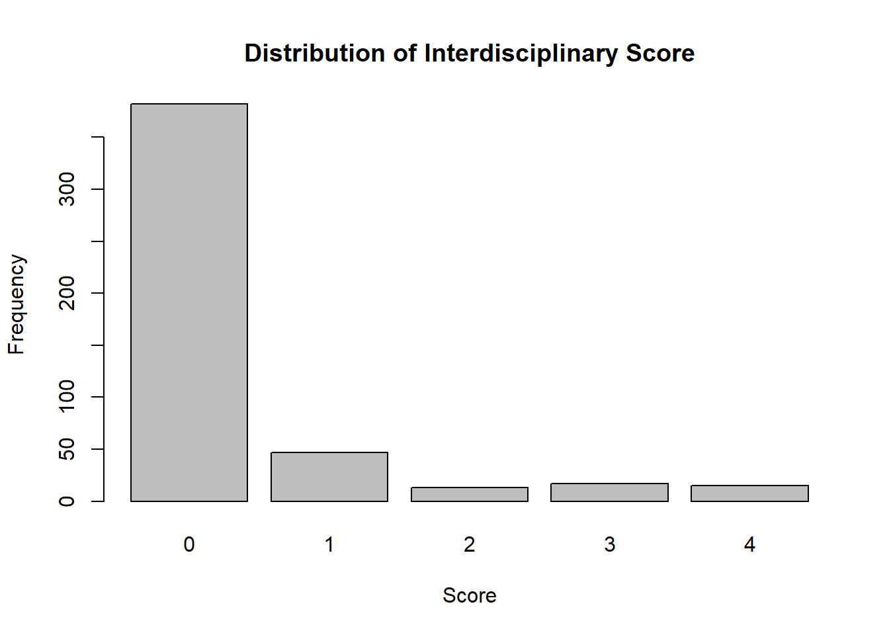
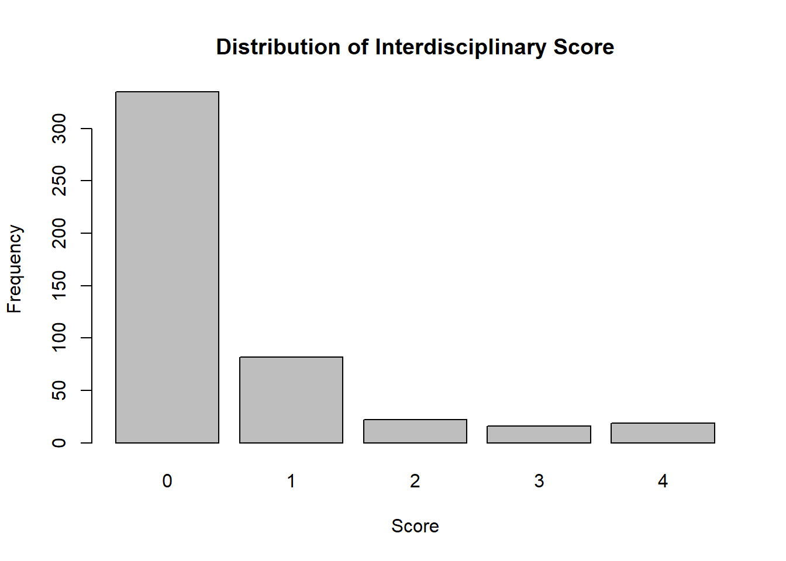
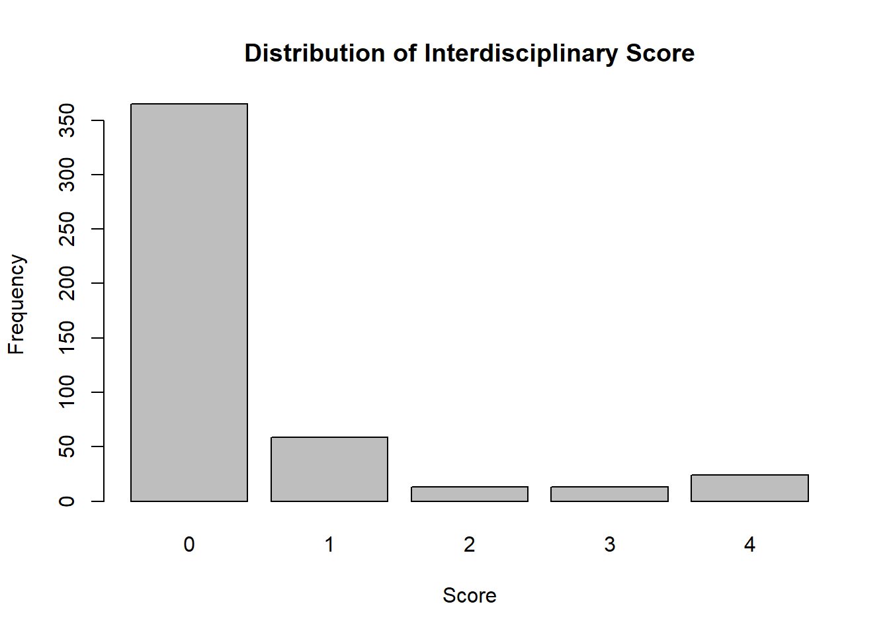
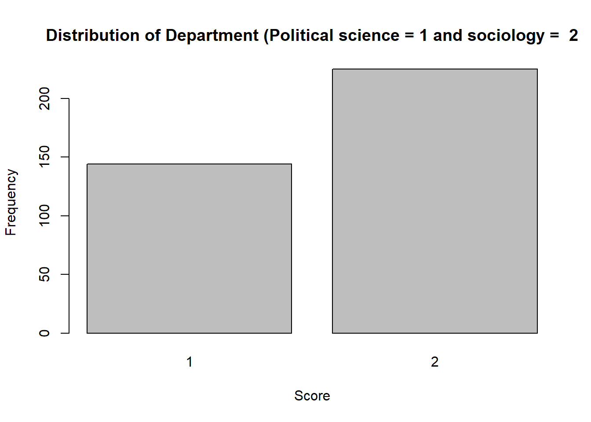

Last compiled on oktober, 2025
Data
The data used in this study originate from the OpenAlex database, an
open-access bibliographic catalogue containing metadata on scholarly
publications, authors, and institutional affiliations. The dataset was
pre-collected and provided as part of the course materials and includes
information on scholars affiliated with Dutch universities, such as
name, department, university of employment, and publication history. For
this study, a subset of scholars from the departments of Sociology and
Political Science at Radboud University (RU) and Utrecht University
(UU), University of Groningen (RUG) and Amsterdam (UvA) were selected.
This selection was made to allow for a focused comparison of
collaboration patterns within and between two closely related social
science disciplines. Co-authorship data were used to construct
longitudinal collaboration networks across three time periods, or
“waves,” covering 2015–2018, 2019–2023, and 2024–2025.
Dependent variable The dependent variable in this
study captures the formation and persistence of collaboration ties
between scholars across two time periods. Collaboration is defined as
the co-authorship of at least one academic publication. The data were
structured as all an undirected network, where a tie between two
scholars indicates that they co-authored one or more publications during
a given time wave. I decided to include undirected ties between all
authors, meaning that every author on a publication is assumed to be
equally connected to every other author on that publication, regardless
of authorship order. I made this decision because I think that
undirected ties better represent shared knowledge exchange.
Independent variables Two main actor-level variables
are included in the analysis: departmental affiliation and individual
interdisciplinarity.
Departmental affiliation represents each scholar’s disciplinary
background and serves as a categorical covariate distinguishing members
of the political science and sociology departments. This variable allows
for the examination of disciplinary homophily, that is, the extent to
which researchers preferentially collaborate with colleagues from the
same department. In the RSiena model, this variable is included as a
constant actor covariate coded as 0 for political science and 1 for
sociology.
Individual interdisciplinarity measures the extent to which a scholar
engages in collaboration across departmental boundaries. For each wave,
a matrix was constructed indicating whether each collaborator (alter)
belonged to a different department. For each scholar (ego), the number
of cross-department collaborations was divided by their total number of
collaborations, producing a proportion of interdisciplinary ties that
can vary across waves.
To account for both direct and indirect exposure to
interdisciplinarity, scholars who had no cross-department ties
themselves but were connected to others with such ties were assigned an
indirect exposure score. The resulting variable was then categorized
into five ordered levels:
- 0 = no interdisciplinary exposure
- 1 = indirect exposure only
- 2 = ≤ 25% interdisciplinary ties
- 3 = 25–50% interdisciplinary ties
- 4 = > 50% interdisciplinary ties
Including indirect exposure captures the idea that researchers’
behaviors and opportunities are shaped not only by their own
collaborations but also by those within their immediate social
environment. Through colleagues who are themselves interdisciplinary,
scholars gain indirect access to diverse epistemic communities, methods,
and theoretical perspectives. In this sense, indirect exposure
represents the diffusion of interdisciplinary influence through local
network structures, extending beyond direct collaboration ties. This
aligns with Granovetter’s (1973) theory of the strength of weak ties,
which emphasizes the diffusion of novel information through indirect
social connections. The resulting measure was entered into RSiena as a
time-varying actor covariate (varCovar).
Methods and analytical
strategy
For this project the analytical strategy will consist out of 3 steps.
In the first step I will provide some descriptive statistics of the
complete sample. In the second step some descriptive statics of the
network will be presented together with multiple different
visualizations of the different waves. These descriptives together with
the visualizations will be used to capture some of the macro-level
changes in the network and to answer hypothesis 1 and 2. Third, the
longitudinal network analysis will be conducted using RSiena, a package
designed for Stochastic Actor-Oriented Models (SAOMs). This approach
assumes that networks evolve as a result of actors’ individual decisions
and preferences, influenced by both structural and attribute-based
factors. RSiena enables the modeling of micro-level behavioral changes
that collectively shape the macro-level structure of the network over
time. Through its estimation framework, the method distinguishes between
selection processes, where network ties themselves are the dependent
variable, and influence processes, where the outcome concerns changes in
actor attributes. This makes RSiena particularly suited for examining
how collaboration patterns among scholars emerge and transform across
time. Descriptive statistics
Descriptives
The sample includes scholars affiliated with four Dutch universities:
Radboud University (RU), the University of Amsterdam (UvA), the
University of Groningen (RUG), and Utrecht University (UU). These
institutions were selected as they represented the largest groups within
the broader dataset. In the first wave, 91 scholars were affiliated with
RU, 61 with RUG, 3 with UU, and 149 with UvA. The distributions remained
relatively stable across waves, showing only minor fluctuations due to
changes in institutional affiliations over time.
Regarding disciplinary composition, the sample consists of
researchers from sociology and political science, with more sociologist
(61%) compared to political scientist (39%).
To assess individual interdisciplinarity, scholars were categorized
based on the proportion of their cross-department collaborations,
including indirect exposure. Most researchers did not engage in
interdisciplinary collaboration (score = 0) across all waves, though a
smaller subset showed indirect or moderate levels of exposure.
These patterns indicate that while the majority of scholars have no
direct interdisciplinary exposure, a notable proportion experience
indirect or partial interdisciplinary collaboration. Over time, there is
some diffusion of interdisciplinary ties within the network. One the one
hand, there is a modest increase in interdisciplinary ties from wave one
tot wave two.On the other hand there is a strong decline in
interdisciplinary ties in wave 3. This is contradictory to the
expectation in hypothesis two.
Data preperations
Functions
rm(list = ls())
fpackage.check = function(packages) {
lapply(packages, FUN = function(x) {
if (!require(x, character.only = TRUE)) {
install.packages(x, dependencies = TRUE)
library(x, character.only = TRUE)
}
})
}
fsave = function(x, file = NULL, location = "./data/processed/") {
ifelse(!dir.exists("data"), dir.create("data"), FALSE)
ifelse(!dir.exists("data/processed"), dir.create("data/processed"), FALSE)
if (is.null(file))
file = deparse(substitute(x))
datename = substr(gsub("[:-]", "", Sys.time()), 1, 8)
totalname = paste(location, datename, file, ".rda", sep = "")
save(x, file = totalname) #need to fix if file is reloaded as input name, not as x.
}
fload = function(filename) {
load(filename)
get(ls()[ls() != "filename"])
}
fshowdf = function(x, ...) {
knitr::kable(x, digits = 2, "html", ...) |>
kableExtra::kable_styling(bootstrap_options = c("striped", "hover")) |>
kableExtra::scroll_box(width = "100%", height = "300px")
}
Define Network Data
Helper Function
fcolnet = function(data = scholars, university = c("RU", "VU","UU", "UvT", "RUG", "EUR", "UvA"), discipline = "Sociologie", waves = list(c(2015,
2018), c(2019, 2023), c(2024, 2025)), type = c("first")) {
university = paste0('(', paste0(university, collapse='|' ), ')')
discipline = paste0('(', paste0(discipline, collapse='|' ), ')')
# step 1
demographics = data$demographics
sample = which(
(str_detect(demographics$universiteit.22, university)
| str_detect(demographics$universiteit.24, university)
| str_detect(demographics$universiteit.25, university)
) & (
str_detect(demographics$discipline.22, discipline)
| str_detect(demographics$discipline.24, discipline)
| str_detect(demographics$discipline.25, discipline)
) |> replace_na(FALSE))
demographics_soc = demographics[sample, ] |> drop_na(id)
# step 2
ids = demographics_soc$id |> unique()
scholars_sel = list()
for (id_ in ids){
scholars_sel[[id_]] = bind_rows(scholars$works) |>
filter(author_id == id_)
}
scholars_sel = bind_rows(scholars$works)
nwaves = length(waves)
nets = array(0, dim = c(nwaves, length(ids), length(ids)), dimnames = list(wave = 1:nwaves, ids,
ids))
dimnames(nets)
# step 3
df_works = tibble(
works_id = scholars_sel$id,
works_author = scholars_sel$authorships,
works_year = scholars_sel$publication_year
)
df_works = df_works[!duplicated(df_works), ]
# step 4
if (type == "first") {
for (j in 1:length(waves)) {
df_works_w = df_works[df_works$works_year >= waves[[j]][1] & df_works$works_year <= waves[[j]][2],
]
for (i in 1:nrow(df_works_w)) {
ego = df_works_w$works_author[i][[1]]$id[1]
alters = df_works_w$works_author[i][[1]]$id[-1]
if (sum(ids %in% ego) > 0 & sum(ids %in% alters) > 0) {
nets[j, which(ids %in% ego), which(ids %in% alters)] = 1
}
}
}
}
if (type == "last") {
for (j in 1:length(waves)) {
df_works_w = df_works[df_works$works_year >= waves[[j]][1] & df_works$works_year <= waves[[j]][2],
]
for (i in 1:nrow(df_works_w)) {
ego = rev(df_works_w$works_author[i][[1]]$id[1])
alters = rev(df_works_w$works_author[i][[1]]$id[-1])
if (sum(ids %in% ego) > 0 & sum(ids %in% alters) > 0) {
nets[j, which(ids %in% ego), which(ids %in% alters)] = 1
}
}
}
}
if (type == "all") {
for (j in 1:length(waves)) {
df_works_w = df_works[df_works$works_year >= waves[[j]][1] & df_works$works_year <= waves[[j]][2],
]
for (i in 1:nrow(df_works_w)) {
egos = df_works_w$works_author[i][[1]]$id
if (sum(ids %in% egos) > 0) {
nets[j, which(ids %in% egos), which(ids %in% egos)] = 1
}
}
diag(nets[j,,]) = 0
}
}
output = list()
output$data = demographics_soc
output$nets = nets
return(output)
}
Loading data
packages = c(
"RSiena", "tidyverse","devtools",
"dplyr", "stringr", "RsienaTwoStep"
)
library(igraph)
library(dplyr)
fpackage.check(packages)
#> [[1]]
#> NULL
#>
#> [[2]]
#> NULL
#>
#> [[3]]
#> NULL
#>
#> [[4]]
#> NULL
#>
#> [[5]]
#> NULL
#>
#> [[6]]
#> NULL
scholars = fload("C:/Users/hanne/Downloads/20251017scholars.Rda")
Network
# Build the network
test <- fcolnet(data = scholars,
university = c("RU", 'UvA', "RUG","UU"),
discipline = c("Sociologie", "Politicologie"),
waves = list(c(2015, 2018), c(2019, 2023), c(2024, 2025)),
type = c("all"))
# --- Prepare ego-level data for later use ---
df_ego <- test$data
# First wave
test_w1 <- igraph::graph_from_adjacency_matrix(
test$nets[1,,],
mode = "undirected",
weighted = NULL,
diag = FALSE,
add.colnames = NULL
)
# Second wave
test_w2 <- igraph::graph_from_adjacency_matrix(
test$nets[2,,],
mode = "undirected",
weighted = NULL,
diag = FALSE,
add.colnames = NULL
)
# thrird wave
test_w3 <- igraph::graph_from_adjacency_matrix(
test$nets[3,,],
mode = "undirected",
weighted = NULL,
diag = FALSE,
add.colnames = NULL
)
# Make it an array
nets_correct <- aperm(test$nets, c(2, 3, 1))
dim(nets_correct)
#> [1] 474 474 3
net_siena <- sienaDependent(nets_correct)
Constructing
Independent varaible interdisciplinarity
# ---------- Bereken cross-department variabele voor alle waves ----------
# Vereist: nets_correct (array van dim [actors x actors x waves])
# df_ego met kolom discipline.22
# 1. Disciplinevector voorbereiden
dept_num <- as.numeric(as.factor(df_ego$discipline.22))
dept_num[is.na(dept_num)] <- 99 # vervang missende waarden door neutrale code
# 2. Functie om cross-score per wave te berekenen
get_cross_score <- function(wave_matrix, dept_num) {
# Verschilmatrix: TRUE als alter andere discipline heeft
diff_dept_matrix <- outer(dept_num, dept_num, FUN = function(i, j) i != j)
# Aantal cross-department ties per ego
cross_out_counts <- rowSums(wave_matrix * diff_dept_matrix, na.rm = TRUE)
# Totale outdegree per ego
ego_outdeg <- rowSums(wave_matrix, na.rm = TRUE)
# Proportie cross-department relaties
cross_prop <- ifelse(ego_outdeg > 0, cross_out_counts / ego_outdeg, 0)
# Indirecte blootstelling (alter heeft cross_prop > 0)
indirect_flag <- rep(0, length(cross_prop))
for (i in seq_along(cross_prop)) {
alters <- which(wave_matrix[i, ] != 0)
if (length(alters) > 0) {
if (cross_prop[i] == 0 && any(cross_prop[alters] > 0)) {
indirect_flag[i] <- 1
}
}
}
# Categoriseer score
cross_score <- dplyr::case_when(
cross_prop == 0 & indirect_flag == 0 ~ 0,
cross_prop == 0 & indirect_flag == 1 ~ 1,
cross_prop > 0 & cross_prop <= 0.25 ~ 2,
cross_prop > 0.25 & cross_prop <= 0.5 ~ 3,
cross_prop > 0.5 ~ 4
)
return(cross_score)
}
# 3. Toepassen op alle waves
nwaves <- dim(nets_correct)[3]
cross_scores <- sapply(1:nwaves, function(w) {
get_cross_score(nets_correct[,,w], dept_num)
})
# 4. RSiena varCovar-object aanmaken
cross_cov <- varCovar(cross_scores)
Constructing
Independent varaible department
demographics_soc <- test$data
# Replace empty / missing with NA
demographics_soc$discipline.22[demographics_soc$discipline.22 == "missing"] <- NA
# Keep only the two real departments
dept_factor <- factor(demographics_soc$discipline.22,
levels = c("Politicologie", "Sociologie"))
# Convert to numeric for RSiena
dept_num <- as.numeric(dept_factor)
# Create a covariate object (RSiena ignores NAs automatically)
dept_cov <- coCovar(dept_num)
Descriptives in R
Universities
#>
#> Bocconi University/UvA Leiden
#> 1 1
#> Leiden uni/UvA RU
#> 1 91
#> RU/RUG RUG
#> 1 61
#> RUG/RU RUG/Tilburg
#> 1 1
#> RUG/TU Delft RUG/Universiteit Stockholm
#> 1 1
#> RUG/University Linköping RUG/University of Turku
#> 1 1
#> UU UU/UvA
#> 48 1
#> UU/VU UvA
#> 1 149
#> UvA/EUR UvA/Frankfurt School of Finance & Management
#> 1 1
#> UvA/Shandong uni UvA/Uni Gothenburg
#> 1 1
#> UvA/Uni of Lausanne UvA/University of Lausanne
#> 1 1
#> UvT VU
#> 1 1
#>
#> RU RUG UU UvA
#> 91 61 48 149
#>
#> RU RUG UU UvA
#> 88 66 43 166
#>
#> RU RUG UU UvA
#> 67 71 32 149
Distribution
interdisciplinarity wave 1, 2, 3
#>
#> 0 1 2 3 4
#> 382 47 13 17 15

#>
#> 0 1 2 3 4
#> 335 82 22 16 19

#>
#> 0 1 2 3 4
#> 365 59 13 13 24

Distribution
department wave 1
#> dept_cov
#> 1 2
#> 144 225

